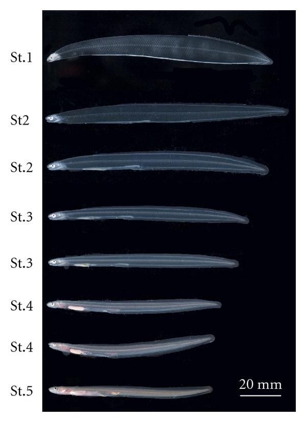
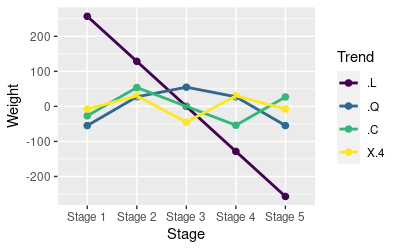

Recall from our statistics review that the ANOVA method of analyzing three or more groups is to:
- Conduct an initial test for significant variation among group means (the omnibus test of the predictor in an ANOVA table)
- If the predictor is statistically significant, then a follow-up, post-hoc procedure is conducted to find out which pairs of means are significantly different
We do this odd two-step procedure to avoid excessive false positive errors. We will review post-hoc procedures first, and then will learn about another way of comparing means, orthogonal contrasts, which do not suffer from the inflated Type I error problem, and are a good choice when it is possible to make use of them.
Post-hoc procedures
We will be working with the conger eel data set we saw in lecture - it is a study by Kawakami et al. 2009 of changes in water, neutral sugars, and hyaluronan during larval development. Illustrations of the five larval stages are shown to the left (two images are given for stages 2, 3, and 4). Because larval development is a process that occurs in sequence over time, developmental stage is an ordinal categorical variable.
You already know about Tukey tests - the Tukey procedure compares every possible pair of means, of which there are k(k-1)/2, or 10 with our five stages of development. The amount of adjustment depends on the number of tests, and with 10 comparisons it will take a pretty big difference to be statistically significant - this will protect against Type I (false positive) errors, but at the expense of missing smaller differences (Type II, false negative errors). If we are only interested in when the eels start to differ from their Stage 1 starting point we could use Dunnett's tests, which compare each mean to a single group - with five groups this means we will only have to correct for 4 comparisons if we use Dunnett's tests, and smaller differences will be detectable.
Start R Studio and make a new project for today's assignment. The data set is here, and the R markdown file to use today is here.
1. Import the eels.xlsx file into an R data set called "eels". Put the commands in chunk eels.import.data of your Rmd file.
By default columns of text are imported as character data. R has a special data type for variables that are meant to be used to define groups in a model, called a factor, and we can convert Stage to a factor before using it (in your Rmd file, just below your read_excel() command):
eels$Stage <- factor(eels$Stage)
This command takes the text labels in eels$Stage, converts them to a factor made up of levels (using factor(Stage)), and assigns the result back into eels$Stage, thereby replacing the non-factor version with the factor we just created.
2. You can now plot the means and 95% confidence intervals for hyaluronan (HA) by developmental stage (Stage). We are going to focus on HA for this exercise, since it has an interesting pattern of change across the stages of development. We did this type of graphing last time - use summarySE() from Rmisc to get the summary data to plot (summarize.data chunk of your Rmd file), and use ggplot2's ggplot() command to make your graph (plot.means.ci chunk of your Rmd file).
Note that the stages are in order from 1 to 5, but this is only because alphabetical order happens to also be chronological order for the factor levels, Stage 1, Stage 2, Stage 3, Stage 4, and Stage 5. Don't let the fact that they happen to be in order fool you - Stage is an unordered factor as far as R is concerned, and the ordering will not be used in this first set of analyses.
3. Fit a linear model of HA as a function of Stage, and call it eels.ha.lm - put the command in the fit.lm chunk of your R markdown file. Once you have it, also get the ANOVA table (enter the anova() command below the lm() command in the same chunk).
4. The command we will use to get Tukey tests from our GLM is part of the "emmeans" package. If you're working on a computer on campus, or through Cougar Apps it is already installed and just needs to be loaded - you can load it using the command (in the load.emmeans chunk of your R markdown file):
library(emmeans)
If you are working on your own computer you can install the emmeans library first in the Packages tab, and then add the library(emmeans) to your code.
The emmeans package is...amazing. We will use it throughout the semester, for multiple comparison procedures, graphs, and estimates of marginal means (or "least squares means" as they are sometimes called).
The emmeans library uses a single command, emmeans(), for all of its post-hocs, with arguments that indicate the kind of post-hoc to return. To get Tukey post-hocs, type the command (in the tukey.emmeans chunk of your R markdown file):
emmeans(eels.ha.lm, tukey ~ Stage) -> eels.ha.emm
eels.ha.emm
You will see all ten of the comparisons that can be made between the five stages, along with their p-values, reported:
$emmeans
Stage emmean SE df lower.CL upper.CL
Stage 1 564 36.4 15
486.3 641
Stage 2 636 36.4 15
558.2 713
Stage 3 406 36.4 15
328.2 483
Stage 4 271 36.4 15
193.5 348
Stage 5 104 36.4 15
26.1 181
Confidence level used: 0.95
$contrasts
contrast
estimate SE df t.ratio p.value
Stage 1 - Stage 2 -71.9 51.4 15
-1.397 0.6384
Stage 1 - Stage 3 158.1 51.4 15
3.075 0.0513
Stage 1 - Stage 4 292.8 51.4 15
5.695 0.0004
Stage 1 - Stage 5 460.2 51.4 15
8.950 <.0001
Stage 2 - Stage 3 230.0 51.4 15
4.472 0.0035
Stage 2 - Stage 4 364.7 51.4 15
7.092 <.0001
Stage 2 - Stage 5 532.1 51.4 15
10.348 <.0001
Stage 3 - Stage 4 134.7 51.4 15
2.620 0.1163
Stage 3 - Stage 5 302.1 51.4 15
5.876 0.0003
Stage 4 - Stage 5 167.4 51.4 15
3.256 0.0365
P value adjustment: tukey method for comparing a family of 5
estimates
The output is in two blocks:
- The first block is labeled $emmeans, and it gives the mean, standard error, degrees of freedom, and confidence interval for each stage.
- The second block is labeled $contrasts, and it gives the Tukey tests comparing pairs of stages. The comparisons are, for example, Stage 1 - Stage 2, which literally says that the mean for Stage 2 is subtracted from the mean for Stage 1. A negative "estimate" of the difference between means indicates that Stage 2 has a bigger mean than Stage 1. The sign of the difference doesn't affect the p-value, because the tests are all two tailed.
Tukey post-hocs use a sampling distribution that changes shape depending on the number of comparisons being done, so you can continue to interpret Tukey p-values below 0.05 to be significant without inflating your overall Type I error rate.
5. A list of 10 comparisons is difficult to interpret. A simpler presentation that is easier to understand is the "compact letter display", which we can get with the command (put below the previous commands in the same code chunk, in your R markdown file):
multcomp::cld(eels.ha.emm)
This style of command gives the name of a package, followed by two colons, followed by the command within the package that you want to use. If you are working at home, you may need to install the multcomp library before you can use this command.
The cld() command gives you output that looks like this:
Stage emmean SE df lower.CL upper.CL .groupStage 5 104 36.4 15 26.1 181 1
Stage 4 271 36.4 15 193.5 348 2
Stage 3 406 36.4 15 328.2 483 23
Stage 1 564 36.4 15 486.3 641 34
Stage 2 636 36.4 15 558.2 713 4
Confidence level used: 0.95
P value adjustment: tukey method for comparing a family of 5 estimates
significance level used: alpha = 0.05
NOTE: Compact letter displays can be misleading
because they show NON-findings rather than findings.
Consider using 'pairs()', 'pwpp()', or 'pwpm()' instead.
The compact letter display assigns the same number in the .group column to stages that are not significantly different, and assigns different numbers to stages that are significantly different (why not letters? Only the programmers know). If more than one number is assigned to a stage that means that the stage isn't different from either of the stages it shares a number with - for example, Stage 1 is assigned 3 and 4 (not 34), so it isn't different from stages that have a 3 (Stage 3) or stages that have a 4 (Stage 2). From the output you can see that Stage 5 is different from all the others. Identify the rest of the differences that are significant and record them in your R markdown file.
The somewhat snarky note you get when you use the cld() command on an
emmeans() results object indicates that statisticians do not always
agree - the "NOTE" warning you to use a better method reflects the fact
that the emmeans developers disagree with the multcomp developers about
the utility of a compact letter display. Personally, I find them helpful
in summarizing a long list of results in a more compact format.
6. Because post-hoc comparisons adjust for the number of different p-values produced, each difference between means has to be a little bigger to be statistically significant as you add more comparisons. This is fine if you want to make all of the comparisons, but if there are some that don't matter to you it is to your advantage to only compare the groups you want to compare.
For example, if you are only interested in which stages differ from the initial Stage 1, and don't need to compare the other stages to each other, then Dunnett's comparisons are the ones to use.
You can get Dunnett's comparisons with emmeans by changing the tukey ~ Stage argument to dunnett ~ Stage. In the dunnett.emmeans chunk of your R markdown file enter:
eels.ha.dunnett <- emmeans(eels.ha.lm, dunnett ~ Stage)
eels.ha.dunnett
You'll see that the output still reports all of the means in the $emmeans section, but this time the comparisons in $contrasts are only between Stage 1 and each of the other four. If you compare the p-values for the comparisons of each stage to Stage 1 that you get with Dunnett to the same comparison using Tukey tests, you'll see that Dunnett's gives you smaller p-values for the same comparison. This is because Dunnett's only conducted 4 of the 10 comparisons possible, whereas Tukey tests compare all of them - the amount of difference needed to be statistically significant is thus a little smaller for the Dunnett tests. Consequently, the comparison of Stage 3 to Stage 1 is significant using Dunnett's tests, but not using Tukey's because of this.
Custom contrasts
Tukey and Dunnett aren't specifically designed to ask questions about the change that occurs as the eels develop through sequential stages. We may want to ask a different question than either one of those procedures lets us ask - for example, we might be interested in whether there are changes between the adjacent groups.
There is actually an option in emmeans that will compare consecutive levels against each other - we would just change our command from either tukey ~ Stage or dunnett ~ Stage to consec ~ Stage. But, we will run that analysis using custom contrasts first to learn how they work.
1. First we need to make a set of vectors that define the the mean for each stage, given the order that emmeans() reports them (in increasing order). For example, the mean of Stage 1 is identified with (in your seq.comparisons code chunk of your R markdown document):
s1 <- c(1,0,0,0,0)
This set of weights has a 1 for the first level of Stage, which is Stage 1, and a zero for the other four.
To make the remaining comparisons, you need a vector for each one (add to your R markdown document, below s1):
s2 <- c(0,1,0,0,0)
s3 <- c(0,0,1,0,0)
s4 <- c(0,0,0,1,0)
s5 <- c(0,0,0,0,1)
Now below the s5 line, put the comparisons between the adjacent stages into an R list:
list(s1vs2 = s1-s2, s2vs3 = s2-s3, s3vs4 = s3-s4, s4vs5 = s4-s5) -> seq.comparisons
Note that when we define the list we name each element in a way that identifies what means are being compared, and then create the element by subtracting the two vectors for the means to be compared. For example, the first named element is s1vs2, and we assign to it the s1 vector minus the s2 vector. Naming the elements of the list isn't necessary, but it makes the output easier to interpret, since these names will be used to label the output. What is in this list? In the console enter seq.comparisons and you'll see:
$s1vs2
[1] 1 -1 0 0 0
$s2vs3
[1] 0 1 -1 0 0
$s3vs4
[1] 0 0 1 -1 0
$s4vs5
[1] 0 0 0 1 -1
Each element has a 1 for the first mean to be compared, and a -1 for
the second - this causes the second mean to be subtracted from the first
for each contrast. We can use these to get our sequential comparisons in
the next step.
2. To use these to get multiple comparisons, use the following commands (in your Rmd file, get.seq.comparisons chunk):
emmeans(eels.ha.lm, ~Stage) -> eels.ha.contr.emm
contrast(eels.ha.contr.emm, contr.list, adjust = "mvt")
The output of this command is:
contrast estimate SE df t.ratio p.values1vs2 -71.9 51.4 15 -1.397 0.4820
s2vs3 230.0 51.4 15 4.472 0.0019
s3vs4 134.7 51.4 15 2.620 0.0651
s4vs5 167.4 51.4 15 3.256 0.0190
The first emmeans() command gets the estimated means and their standard errors, and then the contrast() function compares the means based on the contrasts we put in the contr.list object. We also tell contrast() to adjust for multiple comparisons using the "mvt", or multivariate, method, which is the default used by emmeans for sequential contrasts. Since the contrasts are being corrected for multiple comparisons you can interpret p-values less than 0.05 as being statistically significant, because the tests have been corrected for multiple comparisons. You can see that Stage 2 is different from Stage 3, and Stage 4 is different from Stage 5.
How does this compare to the built-in procedure used by emmeans()? Below your contrast() statement, enter:
emmeans(eels.ha.lm, consec ~ Stage)
The output has an additional block of output, because it includes the $emmeans block, but the comparisons of sequential means in the $contrasts block are identical to the custom contrasts.
Now, this is a toy example - we made custom contrasts that reproduce the results of a built-in option for emmeans() so you can see that the custom contrast method works as expected, but we wouldn't go to all the trouble of making custom contrasts to do something that can be accomplished with a simple emmeans() command. However, we can extend this approach to comparing any set of means, including groups of means - for example, if we wanted to compare the average of the first two stages with the average of the last three as one comparison, and only the mean for stage 1 against stage 5 as the other, we could make a contrast list like so (in the console):
list(first2vlast3 = (s1+s2)/2 - (s3+s4+s5)/3, s1vs5 = s1-s5) -> contr.list.2
contrast(eels.ha.contr.emm, contr.list.2, adjust = "mvt")
You'll get your two comparisons, adjusted for the number of comparisons run:
contrast
estimate SE df t.ratio p.value
first2vlast3 340 33.2 15
10.233 <.0001
s1vs5
460 51.4 15 8.950 <.0001
P value adjustment: mvt method for 2 tests
With a (relatively) simple set of steps you can do whatever comparison you want, including ones that are not built in options for the emmeans library, and have them appropriately adjusted for multiple comparisons.
Planned comparisons: orthogonal contrasts
Post-hoc procedures give up some statistical power in order to protect the family-wise error rate. This protection against false positives (Type I errors) comes at the cost of increased false negatives (Type II errors). If in the name of keeping our Type I error rate at 0.05 we require bigger differences between means, then real differences that are small will be missed more often - increase our Type II error rate means that we will more often miss real effects.
Orthogonal contrasts do not suffer from this problem. The reason we have had to adjust for multiple comparisons with the procedures we've used so far is that none of comparisons have done have been independent (orthogonal is another word for independent). For example, a single mean that is unusually large or small may trigger a Type I error for one comparison, and if so it will also probably trigger Type I errors for other comparisons as well. There are at most k - 1 independent contrasts possible, where k is the number of groups - for the Stage variable there are at most 5-1 = 4 orthogonal contrasts. Tukey's comparisons can't be independent because there are more of them than there are levels of the predictor variable. We only had 4 Dunnett's comparisons, but it turns out they are not independent either - to be independent the contrasts need to meet some additional criteria.
Contrasts are done by constructing a contrast matrix, like the one below, that has a row for each group and a column for each contrast. The matrix contains weights that determine what the contrast is comparing. For example, entering a 1 for Stage 1 and a -1 for Stage 2 in the Contrast 1 column will result in a comparison of Stage 1 and Stage 2. The zeros in the Contrast 1 column for the other stages means that they are not used in the comparison. Go ahead and enter these weights for the Contrast 1 column.
| Factor levels | Contrast 1 | Contrast 2 | Contrast 3 | Contrast 4 |
|---|---|---|---|---|
| Stage 1 | ||||
| Stage 2 | ||||
| Stage 3 | ||||
| Stage 4 | ||||
| Stage 5 | ||||
| Column totals: | 0 | 0 | 0 | 0 |
| Contrasts: | Sum of products |
|---|---|
| C1 vs. C2 | 0 |
| C1 vs. C3 | 0 |
| C1 vs. C4 | 0 |
| C2 vs. C3 | 0 |
| C2 vs. C4 | 0 |
| C3 vs. C4 | 0 |
The app will sum the weights in each column and give you a column total - to be independent the sum of the weights has to be 0 for each column.
If we want to make the contrast matrix that represents Dunnett's comparisons, we will need to use a 1 for Stage 1 in every column, and a -1 for the other stage that is being compared (Stage 3 for Contrast 2, Stage 4 for Contrast 3, and Stage 5 for Contrast 4). Go ahead and enter these weights for the other three contrasts.
You will see that when you finish entering your Dunnett's weights the table to the right of the contrast matrix is reporting the sum of products of the two contrasts named (the first row is summing the products of weights for Contrast 1 vs. Contrast 2, the second row for Contrast 1 vs. Contrast 3, and so on). You'll see that the numbers are all equal to 1, not 0, and thus they are not orthogonal.
You can do the same with our sequential comparisons - entering 1 for the first stage and -1 for the second stage in each comparison we made will give you column sums of 0, but some of the sums of products of weights are not equal to 0, which means that sequential comparisons are not independent either, and we were right to adjust for multiple comparisons for those tests.
We now have two examples of sets of 4 comparisons that are not orthogonal and require correction for multiple comparisons. The question is, then, what sets of comparisons are orthogonal for these five groups?
Four possible sets of orthogonal contrasts for our five stages are shown below. You'll notice that the weights are not all 0's and 1's now. When weights are numerically the same between two stages we are using the average of those means in that contrast. For example, Contrast 1 in Set 1 is comparing the mean of Stage 1 and Stage 2 to the mean of Stage 3, Stage 4, and Stage 5. The weights are selected so that the sum of weights is equal to zero - it doesn't matter that the weights on Stage 1 and Stage 2 are 3 and the weights on the rest are -2, provided that the sum of the weights is zero. Since these are not simple comparisons between means the last row, labeled "Interpretation", explains what is being compared for each contrast.
Set 1:
| Factor levels | Contrast 1 | Contrast 2 | Contrast 3 | Contrast 4 |
|---|---|---|---|---|
| Stage 1 | 3 | 1 | 0 | 0 |
| Stage 2 | 3 | -1 | 0 | 0 |
| Stage 3 | -2 | 0 | 2 | 0 |
| Stage 4 | -2 | 0 | -1 | 1 |
| Stage 5 | -2 | 0 | -1 | -1 |
| Interpretation | Mean of 1, 2 vs. mean of 3, 4, 5 | 1 vs. 2 | 3 vs. mean of 4,5 | 4 vs. 5 |
Set 2:
| Factor levels: | Contrast 1 | Contrast 2 | Contrast 3 | Contrast 4 |
|---|---|---|---|---|
| Stage 1 | 4 | 0 | 0 | 0 |
| Stage 2 | -1 | 3 | 0 | 0 |
| Stage 3 | -1 | -1 | 2 | 0 |
| Stage 4 | -1 | -1 | -1 | 1 |
| Stage 5 | -1 | -1 | -1 | -1 |
| Interpretation | 1 vs. mean of 2-5 | 2 vs. mean of 3-5 | 3 vs. mean of 4-5 | 4 vs. 5 |
Set 3:
| Factor levels: | Contrast 1 | Contrast 2 | Contrast 3 | Contrast 4 |
|---|---|---|---|---|
| Stage 1 | 4 | 0 | 0 | 0 |
| Stage 2 | -1 | 1 | 1 | 0 |
| Stage 3 | -1 | 1 | -1 | 0 |
| Stage 4 | -1 | -1 | 0 | 1 |
| Stage 5 | -1 | -1 | 0 | -1 |
| Interpretation | 1 vs. mean of 2-5 | Mean of 2,3 vs. mean of 4,5 | 2 vs. 3 | 4 vs. 5 |
Set 4:
| Factor levels: | Contrast 1 | Contrast 2 | Contrast 3 | Contrast 4 |
|---|---|---|---|---|
| Stage 1 | 4 | 0 | 0 | 0 |
| Stage 2 | -1 | 1 | 1 | -1 |
| Stage 3 | -1 | 1 | -1 | 1 |
| Stage 4 | -1 | -1 | 1 | 1 |
| Stage 5 | -1 | -1 | -1 | -1 |
| Interpretation | 1 vs. mean of 2-5 | Mean of 2,3 vs. mean of 4,5 | Mean of 2,4 vs. mean of 3,5 | Mean of 2,5 vs. mean of 3,4 |
You will see that every set of contrasts has to include comparisons that combine stages together (at least one contrast has a non-zero weight for every stage). Simple comparisons of pairs of means are not orthogonal, and will require correction for multiple comparisons.
The problem with our contrasts, however, is that several of them don't make much sense for our eel data, and we wouldn't want to use them - having a statistically powerful analysis of questions we don't want to ask is...unhelpful. Probably the set that is most appropriate for the eel data is Set 2 which compares a single Stage with the mean of the Stages after it - the first contrast compares Stage 1 to the mean of 2 through 5, the second compares Stage 2 to the mean of 3 to 5, and so on. This is similar to our sequential comparisons, but it uses the mean of subsequent stages, which allows us to define contrasts that are orthogonal. We will use this set of contrasts next.
1. We will make four vectors, each with one of the sets of weights from a column in the Set 2 contrast matrix above. To make the first, in the make.contrast.vectors chunk of your R markdown file, use:
Contrast.1 <- c(4,-1,-1,-1,-1)
Now to make the second:
Contrast.2 <- c(0,3,-1,-1,-1)
You should see that the numbers match the first two columns in Set 2 - now complete this step by making the Contrast.3 and Contrast.4 vectors.
2. Now we want to combine the four contrast vectors into a contrast matrix, but whereas we needed to bind the vectors as rows of a matrix to use them in glht(), we need to bind them as columns of a matrix to use them as contrasts. Use the cbind() command (short for column bind - in the make.cotrast.matrix chunk of your R markdown file):
cbind(Contrast.1, Contrast.2, Contrast.3, Contrast.4) -> set.2.contrasts
Take a look at the matrix by entering the set.2.contrasts name in the console. You'll see that they look like this:
Contrast.1 Contrast.2 Contrast.3
Contrast.4
[1,]
4
0
0 0
[2,]
-1
3
0 0
[3,]
-1
-1
2 0
[4,]
-1
-1
-1 1
[5,]
-1
-1
-1 -1
These weights match the ones in the Set 2 table above, and each column is labeled by the contrast number.
3. We are now going to assign these custom contrasts to the Stage variable. Unfortunately, once the contrasts are assigned there isn't an obvious indication in R Studio, and we would have to remember that we did it. To avoid confusion later, we will make a copy of Stage called Stage.custom, and then we will assign the custom contrasts to the duplicate copy. This way the Stage variable will continue to be a conventional unordered factor that uses the default dummy coding when it is used in a model, and the name Stage.custom will serve as a reminder to us that we assigned custom contrasts to that column.
First, make a copy of Stage called Stage.custom and add it as a column to the eels data set (in the make.copy.of.stage chunk of your R markdown file):
eels$Stage.custom <- eels$Stage
Now we can assign the set.2.contrasts matrix to this new Stage.custom variable (in the assign.contrasts.to.stage chunk of the R markdown file):
contrasts(eels$Stage.custom) <- set.2.contrasts
Note that this is not the same command as you were using for custom contrasts, above - this is contrasts (with an s), not contrast.
4. In the custom.contrasts.test chunk of your R markdown file, fit a model using HA as a response variable, and Stage.custom as the predictor. Get the summary() for the model, and you will see this:
Coefficients:
Estimate Std. Error t value Pr(>|t|)
(Intercept)
395.938 16.261 24.349 1.79e-13 ***
Stage.customContrast.1 41.966
8.131 5.162 0.000116 ***
Stage.customContrast.2 93.896
10.497 8.945 2.12e-07 ***
Stage.customContrast.3 72.813
14.844 4.905 0.000190 ***
Stage.customContrast.4 83.705
25.711 3.256 0.005322 **
The Intercept term is the grand mean of HA across all of the stages. Below that are the tests of each of the four custom contrasts - you can see that each is significant, meaning that each Stage is different from the average of the Stages that follow. Because these are planned, orthogonal contrasts you can assess significance of these tests at the 0.05 level without adjusting for multiple comparisons.
Ordinal categorical variables and orthogonal polynomials:
So far none of the methods we used made full use of the fact that Stage is an ordinal variable. The closest we came was in our selection of custom contrasts, which compared stages to those that came after them, but there was no consideration of the pattern of change across the levels. When we have numeric predictors we are primarily interested in the pattern of change - we fit a line to the data and interpret the slope of the line. Here we have levels that do not have a quantitative relationship with one another, but they do have a natural order, and we might want to know the pattern of change in HA across developmental stages. To address that question we can use orthogonal polynomial contrasts, and to get those we need Stage to be an ordered factor.
R uses orthogonal polynomial contrasts by default when we use an ordered factor in a linear model, so we don't need to construct a contrast matrix this time - all we need to do is to make an ordered factor out of Stage to get the contrasts we want.
1. We will use the same trick we used for our custom contrasts to make an ordered factor - when we make Stage an ordered factor we will assign it to a new variable name called Stage.ordered, so that Stage will continue to function as an un-ordered factor.
To make an ordered factor called "Stage.ordered", you can add "ordered = T" as an argument to the factor() command, like so (in the stage.ordered chunk of your R markdown file):
eels$Stage.ordered <- factor(eels$Stage, ordered = T)
If you type eels$Stage.ordered at the console you'll see the stage names with the factor levels listed at the bottom - the levels will be separated by less than symbols, <, indicating that R now knows that levels increase from left to right.
2. Before we run the analysis, let's take a look at what the orthogonal polynomial contrasts actually do - enter the command in the orthog.poly.weights chunk of your R markdown file:
contr.poly(5) -> poly.wts
poly.wts
This will show you the weights used to make orthogonal polynomial contrasts for 5 levels of a factor, like so:
.L
.Q
.C ^4
[1,] -0.6324555 0.5345225 -3.162278e-01 0.1195229
[2,] -0.3162278 -0.2672612 6.324555e-01 -0.4780914
[3,] 0.0000000 -0.5345225 -4.095972e-16 0.7171372
[4,] 0.3162278 -0.2672612 -6.324555e-01 -0.4780914
[5,] 0.6324555 0.5345225 3.162278e-01 0.1195229
Instead of comparisons between specific group means, these weights define the pattern of change expected for a factor with five levels. The patterns are read down the columns, and the labels indicate the linear trend (.L), quadratic trend (.Q), cubic trend (.C), and fourth (^4) order trends. The patterns are:
- Linear (.L column) - starting with -0.598, and increasing to 0.598 by equal amounts across the six levels.
- Quadratic (.Q column) - defines an upward-pointing parabola, starting and ending with positive values, and declining to the smallest, negative values for the two middle levels.
- Cubic (.C column) - defines a sideways s-curve, starting negative, increasing to a maximum, declining to a minimum, and increasing to a positive end point (mind the exponents - the middle number in row 3 is e-16, meaning that the decimal point is sixteen places to the left, and the number is very close to zero).
- Fourth degree (^4 column) - w-shaped, with a peak in the middle.
A graph of the weights is shown to the left. The exact values of the weights aren't important, but there are a couple of rules for selecting them:
- They should be centered on 0 - for example, the linear weights go from -0.632 to +0.632, and are equal 0 at the middle stage, Stage 3. As you look at each column you'll see they are all symmetrical around 0. This rule allows you to flip the trends around the x-axis by multiplying the weights by -1.
- They need to be orthogonal, so the columns should sum to 0 and the sum of the products of any two sets of columns should be 0 as well.
You can confirm the sum of products criterion with a quick calculation - first, you can multiply the linear column by each of the others with (in the console):
poly.wts[,1] * poly.wts[,-1]
This command multiplies the .L column from poly.wts (.L is column 1) by every column except the .L column (column -1 omits .L). To confirm that these sum to 0 use (in the console):
colSums(poly.wts[,1] * poly.wts[,-1])
You should get numbers such as -1.110223e-16. This is a number in R's scientific notation format, and it means -1.110223 x 10-16, which is a very small number, very close to 0 (it is only not exactly zero because of rounding error). You can do the same calculation for any of the columns 2 through 4 and you should see the same thing, confirming that this set of weights produces independent contrasts.
A little aside on contrasts in R for the curious.
R refers to all of the coding methods as contrasts, whether they are orthogonal or not. Dummy coding is also called "treatment contrasts", for example. You can see what the default contrast types are by using the command:
options("contrasts")
This should show you that the default contrasts are "contr.Treatment" "contr.poly", which are the contrasts used for unordered factors and for ordered factors, respectively.
You can set the contrast type for factors in two different ways, by setting them globally for all unordered and all ordered factors, or by assigning the contrasts to a specific variable as a property of that variable.
For example, to set the default type of contrast for all ordered factors, we would use the command:
options(contrasts = c("contr.treatment", "contr.treatment"))
This changes the default for ordered factors to dummy-codes, which R would then use for any ordered factor we use within this project. We could restore the default with:
options(contrasts = c("contr.treatment", "contr.poly"))
Changing the default affects every ordered factor we might want to use, and it may be that we only need dummy-coded contrasts for Stage.ordered. To just set the contrast type for Stage.ordered without changing the default for any other ordered factors we might want to use, we would use:
contrasts(eels$Stage.ordered) <- contr.treatment(5)
To set the contrasts to orthogonal polynomial for Stage.ordered, you would use the command:
contrasts(eels$Stage.ordered) <- contr.poly(5)
And to remove the setting from Stage.ordered so that the default value is used you would assign NULL as the contrast type - this deletes the property from Stage.ordered, and causes R to apply the default for an ordered factor to the variable:
contrasts(eels$Stage.ordered) <- NULL
3. So, contr.poly(5) showed us what the polynomial weights that will be used to analyze the data will look like. We don't need to use this command to get polynomial contrasts, however, because polynomial contrasts are the default for an ordered factor - as long as we use Stage.ordered as the predictor we will get polynomial contrasts by default. Now run a GLM model with an ordered factor as a predictor (in the lm.with.polynomial.contrasts chunk of your R markdown file):
eels.op.lm <- lm(HA ~ Stage.ordered, data=eels)
This command fits exactly the same linear model as we used before, with HA predicted by Stage, but this time using polynomial contrasts instead of dummy codes to represent the group means. This choice has no effect on the ANOVA table, and we can still get identical Tukey results from this ordered factor that we got from the unordered Stage variable. Let's confirm this to be true.
First, confirm that the ANOVA table isn't affected by the type of contrasts you use - type in the anova.poly.weights chunk of your R markdown file:
anova(eels.op.lm)
and you will get an ANOVA table that matches the one you got with Stage as an unordered factor. Using orthogonal polynomial weights doesn't change the ANOVA table.
Comparisons of pairs of means are also not affected - you can also confirm that you can still get the same Tukey tests from this model (in the tukey.poly.weights chunk of your R markdown file):
glht(eels.op.lm, linfct = mcp(Stage.ordered = "Tukey")) -> eels.op.tukey
summary(eels.op.tukey)
The comparisons of means is exactly the same as before, using polynomial weights doesn't alter these results.
Where the results do differ between ordered and unordered factors is in the coefficients, which you can see with the command (in the coefficient tests.poly.weights chunk of your R markdown file):
summary(eels.op.lm)
The model output looks like this:
Call:
lm(formula = HA ~ Stage.ordered, data = eels)
Residuals:
Min 1Q
Median 3Q Max
-116.94 -43.12 12.68 30.44 122.39
Coefficients:
Estimate Std. Error t value Pr(>|t|)
(Intercept)
395.94 16.26 24.349 1.79e-13 ***
Stage.ordered.L -406.41 36.36
-11.177 1.13e-08 ***
Stage.ordered.Q -102.44 36.36
-2.817 0.0130 *
Stage.ordered.C 85.11
36.36 2.341 0.0335 *
Stage.ordered^4 -62.74
36.36 -1.726 0.1050
---
Signif. codes: 0 ‘***’ 0.001 ‘**’ 0.01 ‘*’ 0.05 ‘.’ 0.1 ‘ ’ 1
Residual standard error: 72.72 on 15 degrees of freedom
Multiple R-squared: 0.904, Adjusted
R-squared: 0.8785
F-statistic: 35.33 on 4 and 15 DF, p-value: 1.805e-07
If you compare the model summary output here to what you got with the unordered version of stage, the bottom section is identical - using an ordered factor doesn't change the fit, degrees of freedom, or overall p-value for the model. But, the coefficient tests are now tests of trend across the ordered stage levels. You'll see that the linear (.L), quadratic (.Q), and cubic (.C) terms are significant, but the fourth degree (^4) term is not.
The graph on the left shows how the coefficients modify the weights to fit to the HA data. The sign on the coefficient keeps the pattern the same if it is positive, but it flips the pattern if it is negative. The magnitude on the coefficient indicates how strong the pattern is. So, for example, the linear trend (.L) has a negative sign, which flips the trend from positive to negative, and it has the largest magnitude, so it is the strongest pattern in the data - the straight line covers the widest range of values along the y-axis in this graph.
When you interpret orthogonal polynomials, remember that they add together. So...
- If you click once on the graph it will show the mean HA for each group (red dots) with the linear trend added to the graph - the linear trend captures the general tendency for HA to decline from Stage 1 to Stage 5.
- If you click again you will see the sum of the linear weights and the quadratic weights, which shows the increase between Stage 1 and stage 2. Think of the test of significance for this trend as being based on how much closer the predicted means get to the observed means by adding the quadratic - there is still some space between predicted and observed means, but less than with only the linear term, so adding the quadratic was a significant improvement.
- Click a third time and you'll see the sum of the linear, quadratic, and cubic weights. The contribution of the cubic term adds the sideways S pattern, which allows the weights to get closer to Stage 2 and Stage 3. Like with the quadratic term, adding the cubic gives us a statistically significant improvement in our ability to predict the actual means for each Stage.
- The fourth degree term isn't significant, but if you click a fourth time the line hits the means exactly - remember, with 4 columns we can reproduce 5 means exactly, and that's what we're getting here. Even though the means are reproduced perfectly, we came close enough with the cubic term that the amount of additional variation explained by adding the fourth order term wasn't enough for it to be statistically significant.
So, the orthogonal polynomial trend results match our impression from looking at the graph nicely, and provide us with some statistical support for claiming that HA peaks at the second stage and declines for the remaining stages. They do not test for differences between any pair of means, but if the question you are interested in is about the pattern of change across ordinal categories, orthogonal polynomials are very useful.
Corrections for multiple comparisons outside of an ANOVA
The contrasts and post-hoc procedures we've learned deal with a single factor in an ANOVA. The data set we have for the eel study has three different response variables, all measured from the same eels, and they are correlated with one another (HA with NS has r = -0.77, HA with water has r = 0.75, NS with water has r = -0.56). Since the variables are not independent it seems we should make some sort of correction for multiple comparisons, but if we are fitting three separate models it's not straightforward to incorporate this into our post-hoc procedures.
When we are in this situation, we can account for the additional chances of Type I errors by adjusting the alpha level instead of using a post-hoc procedure. The simplest correction for the alpha level commonly used is the Bonferroni. Bonferroni's correction sets a nominal alpha level, or family-wise error rate, at a desired level (usually the traditional 0.05) and then calculates the alpha level used for each test by dividing the nominal level by the number of tests conducted. If we were to test for differences among stages in water as well as HA we would be producing two omnibus tests, with two p-values, and could test each at 0.05/2 = 0.025 to avoid an increase in Type I error rate. If we also tested NS, we could test at 0.05/3 = 0.0167.
However, Bonferroni's correction is stronger than absolutely necessary. If we assume that each test has a 5% chance of a false positive, then it also has a 95% chance of a correct negative. Across three comparisons the chance of correct negatives on all of them is 0.95 x 0.95 x 0.95, or (1 - 0.05)3. Any other possible outcome other than this would include a false positive, Type I error in at least one comparison, so the probability of one or more false positives across these five comparisons is 1 - (1 - 0.05)3. If we wanted to achieve an overall family-wise rate of 0.05, we could set this quantity equal to 0.05, and then solve for the level that we would need to test at to achieve a family-wise rate of the desired 0.05 value. In other words:
0.05 = 1 - (1 - α)3
α = 1-(1-0.05)1/3 = 0.0169
This is called the Dunn-Sidak correction, and you can see it is a little bit bigger than Bonferroni, and thus a little more easier to achieve statistical significance with, without increasing the false positive rate.
Let's see how correcting for multiple p-values affects our interpretation of the data. Do the following steps in your R markdown file.
1. Fit a model using water as a response, and Stage as a predictor (chunk water.lm).
2. Fit a model using NS as a response, and Stage as a predictor (chunk ns.lm).
3. Calculate the two corrections we could use - enter (adjusted.alphas):
0.05/3
1 - (1-0.05)^(1/3)
The first calculation is the Bonferroni correction, and the second is Dunn-Sidak. These two values are the corrected alpha-levels we should use to assess if the p-values are statistically significant from our three linear models. Compare the p-values from each of the models and see if any of them are no longer significant after adjustment. The variable that was significant at 0.05 but not at these adjusted levels could be a Type I error if we were to use the 0.05 level.
In summary...
To wrap up this collection of procedures:
- Most of the comparisons we would typically want to make to help us interpret our experiments are not independent, and require us to use a post-hoc procedure that protects our family-wise Type I error rate.
- This includes the common, named procedures (Tukey, Dunnett), as well as any set of simple comparisons between group means.
- We would use the emmeans() command from the emmeans library for most post-hocs, but use contrast() from the emmeans library for custom contrasts that are not available as built-in options within emmeans().
- It is possible to design comparisons that are independent (called orthogonal contrasts), and which do not require correction for multiple comparisons, but the rules for constructing them makes them unusable for some of the comparisons we typically want to make
- A contrast matrix of weights that sum to 0 within a contrast, and whose products sum to 0 for every pairing of contrasts is independent (i.e. orthogonal)
- There are at most k-1 orthogonal contrasts for a data set, and at least some must combine information from more than one group
- Polynomial contrasts that measure the shape of the trend across levels of the predictor are useful for ordinal predictor variables
- If more than one variable is being analyzed from the same experimental subjects they are not independent, and the alpha level used to assess significance should be adjusted
- Bonferroni's correction, and Dunn-Sidak's correction both account for the number of comparisons made
- The omnibus test for the predictor variable is compared against the adjusted alpha level, instead of the usual 0.05 level
Optional - for the adventurous
If you're in the mood for a challenge, continue (yes, this step is optional, but if you want to flesh out your R skills you should opt to do it). If you choose not to do this section just leave it blank in your markdown file.
We know that in order to perfectly reproduce the means for each stage we need to use all of the contrasts, up to the 4th degree, but only the linear, quadratic, and cubic trends were statistically significant for HA. If we would like to see what these significant trends look like we can use the sets of contrast weights and coefficients to predict the stage means and plot them, along with the observed means from the data.
To visualize what the significant trends look like we need to add points to your plot of means that indicate the predicted values for the linear, quadratic, and cubic trends. To do this, we need to extract the coefficients from our fitted model, and the weights from our ordered Stage factor. First the coefficients (in your R markdown file):
coef(eels.op.lm) -> stage.coef
This uses the coef() function to extract the coefficients, and then assigns them to the eels.coef object. Add the name of the object, eels.coef, below your coef() command to see them displayed in your R markdown file. You'll see that there is a coefficient for (Intercept), and one for each of the trends up to the 4th degree.
Now we need the contrast weights. We will use the same contrasts() function we used before, but this time instead of assigning contrasts with it, we will be extracting the weights from Stage.ordered instead (in your R markdown file).
contrasts(eels$Stage.ordered) -> stage.contrasts
Again, if you want to see what this did, enter the name of the stage.contrasts object we created:
stage.contrasts
You should see a matrix with the weights for each trend.
Now we are going to use the coefficients and weights to calculate the linear trend.
stage.coef[1] + stage.coef[2]*stage.contrasts[ ,1] -> linear
linear
The first line calculates the predicted means based on the linear trend, and the second line (linear) displays them on the screen. The calculation in the first line takes the intercept from stage.coef (which we indicated by giving its index number within the brackets), then adds to it the product of the slope (stage.coef[2]) multiplied by the weights for the linear trend (stage.contrasts[ ,1]). Think for a minute about what is happening here - the intercept and slope for the linear trend are single numbers, but we have a whole column of weights in stage.contrasts[ ,1], one for each stage. R does calculations like this by applying slope and intercept repeatedly to each row in stage.contrasts[ ,1] and returns each of the predicted means as a vector of numbers. When you type linear you see the set of five predicted stage means that were calculated with this command.
We will add the predicted means for each level of trend, but to do this in ggplot2 we want to have all three of the statistically significant trends calculated, put them together in a stacked data frame, and then add them to our plot of means and confidence intervals.
So, to calculate the quadratic trend use the command (below the linear trend calculation in your R markdown file:
linear + stage.coef[3]*stage.contrasts[,2] -> quadraticThis works because each new trend is added to the previous one, so we can start with the linear predicted means we calculated in the previous step and add the contribution of the quadratic trend. The coefficient for the quadratic trend is the third one in stage.coef (thus, stage.coef[3]), and the weights in stage.contrasts are in the second column (stage.contrasts[,2]) - multiplying the quadratic coefficient by the quadratic weights and adding them to the linear predicted values gives us our quadratic predicted values.
Now, do the cubic trend - call the result cubic. This is the last of the statistically significant trends for HA.
We want to end up with a data frame that has these predicted means in one column, and labels for which term is represented in another. We can do this by first making a data frame of the three trends:
data.frame(linear, quadratic, cubic) -> trends
and then stacking this data frame:
stack(trends) -> trends.stacked
We will be adding these numbers to a graph of means and error bars, that used "Stage" as the x-axis variable, and "mean" as the y-axis variable, so we should have those names in this data frame as well. The column called "ind" should be renamed to "Trend" to make it clearer what the column represents. To do this, we first need to add the stage labels:
data.frame(levels(eels$Stage.ordered), trends.stacked) -> trends.stacked
Then rename the columns - the columns are the stages, the mean HA, and the trend types, so use:
names(trends.stacked) <- c("Stage","mean","Trend")
Now, to add the linear trend to the graph, you need to re-write your ggplot() command to be:
ggplot(eels.sumstats, aes(x = Stage, y = HA)) + geom_errorbar(aes(ymin = HA - ci, ymax = HA + ci), width = 0.1) + geom_point(size = 4) + geom_line(trends.stacked, mapping = aes(x = Stage, y = mean, color = Trend, group = Trend))
Note that you may have called your summary statistics object something other than eels.sumstats, so change the name of the data set as needed.
You'll see that the trends are plotted as lines and the actual stage means are plotted as large black dots. The linear trend was significant because there is a tendency for HA to decrease from left to right on the graph, but clearly the straight line is not doing a great job of following the pattern. Adding a quadratic term greatly improves the prediction, since it allows the line to increase to a peak at Stage 2 and then decline through stages 3 through 5 - this was a sufficient improvement in the predictions that the quadratic term was also significant. The cubic trend further accounted for the uneven pattern of decline after the second stage, and allowed the prediction to get closer to each of the means - this was enough additional improvement over the quadratic predictions to be statistically significant as well. At that point the predictions were close enough the to observed means that adding the fourth order term didn't improve the fit enough to be statistically significant, even though the fourth order term would allow the predictions to hit the observed means perfectly.
Assignment
All done! Save, knit, and upload your Word file with all your output.